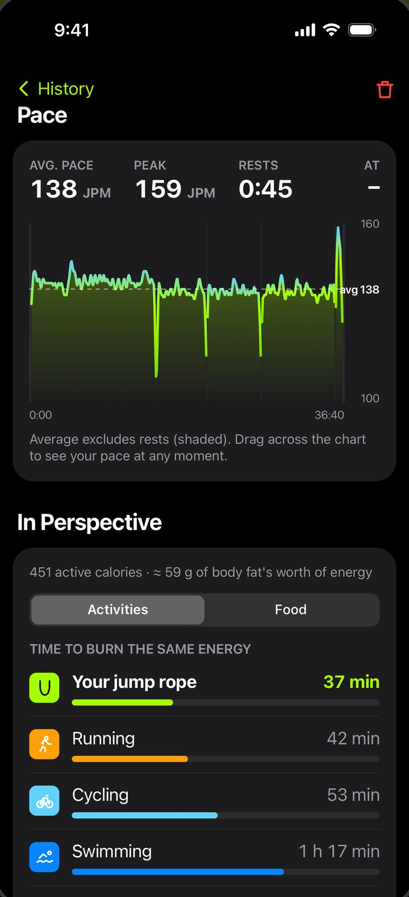

Free live counting for your Crossrope AMP handle. No membership, no account needed.
0jumps since you got here
Bluetooth, straight from your AMP handle to your phone. Big numbers mid-set, a voice cue every lap, and your workouts never leave the device.
FreeRope in under a minute, recorded on a real handle.
Press the pad or your space bar. With a real handle, FreeRope does the tapping.

Talks straight to your handle over Bluetooth. Big, glanceable numbers mid-set, with voice cues every lap.
Built from jump rope research, your body, your pace and your rope weight. A 1 lb rope really does count for more.
Smoothed pace chart with rests shaded out. Drag across it to see your speed at any moment.
Daily goals for jumps, minutes and calories. Best streak, misses and personal bests on every workout.
Free jump, 1 to 20 minute timers, jump targets up to 5,000, Tabata and sprint intervals with spoken countdowns.
How long you’d need to run, cycle or swim for the same burn, and how much pizza you just earned back.
Android, iPhone or any computer with Chrome. Free on all three.
TestFlight is Apple’s own way to share apps before they’re in the App Store, so there’s nothing to sideload and no warnings.
Recommended, iOS 26.2 or newer
That’s it: a FreeRope icon on your home screen. Shake your handle to wake it and tap Connect Handle.
Any iOS version
Save this icon to Photos. In the Shortcuts app tap +, then Open URLs, paste the link below, rename it FreeRope, then use Add to Home Screen and pick the icon.
Point your phone’s camera at the code to open this page there, then follow the Android or iPhone steps.
Open the web app hereFreeRope is free and stays free. If it earns a spot in your routine, a small tip covers Apple’s yearly fee and the time that goes into new features and fixes. Any amount helps. Thank you!
Yes. No ads, no subscription, and no account needed. An account is optional and only puts you on the global leaderboard. It’s a side project shared with r/jumprope.
Crossrope AMP handles (the smart handles that count jumps). FreeRope talks to the handle directly, so you don’t need the Crossrope app or a membership. Non-AMP Crossrope handles have no sensor to count with, but the demo mode still lets you look around.
Yes. It’s a native iPhone app installed through TestFlight, Apple’s official beta-testing app. Each TestFlight build lasts 90 days and new builds install automatically, so you just keep using it. The next step is the App Store itself.
Soon. FreeRope is coming to Google Play. Until then, install the app file from this page, and FreeRope tells you when an update is out.
Android shows the same warning for every app that doesn’t come from the Play Store. FreeRope only asks for Bluetooth (to talk to your handle) and internet (only to check this site for updates). It has no ads and no tracking. Your workouts stay on your phone unless you sign in for the global leaderboard, which syncs workout summaries (see the privacy policy).
From published jump rope oxygen-uptake studies and the 2024 Compendium of Physical Activities, scaled to your height, weight, age and sex. FreeRope adds the physical work of turning your rope, so heavier ropes count for more: about 11% more for a 1 lb rope than a ¼ lb one for an average adult. It’s still an estimate (±10 to 15%), like any app without a heart-rate strap.
No. Install the new FreeRope.apk over the old one and everything stays. On iPhone, TestFlight updates keep your workouts too. One exception: 1.5.1 moved to FreeRope’s own signing key, so if you installed 1.5 on day one, Android will say the update conflicts. Uninstall 1.5 (this clears workouts saved in it), then install 1.5.1. Every update after that installs over the top as usual.
No. FreeRope is an independent fan project and isn’t affiliated with or endorsed by Crossrope. Crossrope and AMP are their trademarks.